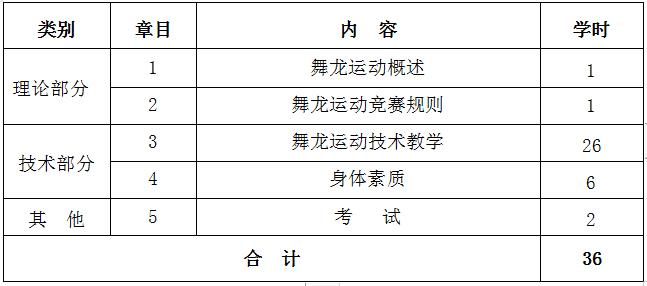

课程管理
|
课程名称 |
公共体育--龙狮运动（Ⅰ） |
课程代码 |
TX031116 |
|
课程类型 |
√通识课 □学科（专业）基础课 □专业发展课 |
课程性质 |
√必修课 □选修课 |
|
开课单位 |
体育学院 |
适用专业 |
非体育专业 |
|
总学时数 |
36 |
周学时数 |
2 |
|
课程学分 |
1 |
编 写 人 |
逯小龙 |
|
编写时间 |
2017.07.20 |
审 批 人 |
刘其龙 |
一、教学目的
本课程以舞龙运动为主要锻炼形式，兼顾全面的身体素质练习，以提高学生的健康水平， 掌握锻炼方法和技能，为终身体育打好基础。本课程教学目的为：
1.通过本选项课的学习，使学生掌握民族传统体育《龙狮运动》课程中舞龙运动基本技术与练习方法， 传承与弘扬民族传统体育文化。
2.培养团队精神，同心协力去完成龙、狮的形态、神态动作，体现出龙、狮生龙活虎的效果，并以多种动、静的变化形式来展现龙、 狮的刚烈威猛之势和气势磅礴之态，突出观赏性。
3.使学生了解龙狮运动的基本知识，培养学生对龙狮运动的兴趣和爱好， 激发爱国主义精神和民族自豪感，弘扬民族精神。
4.全面发展和提高各项身体素质，改善身体机能，为今后运动能力和生活质量的提高打下基础。
二、重点与难点
（一）重点：舞龙运动自练的原则与方法；舞龙运动技术动作。
（二）难点：舞龙运动套路的创编；舞龙运动的基本技术动作，体现舞龙运动的风格特点。
三、基本内容与要求
理论部分：
第1章 舞龙运动概述
1.1 概述
1.2 中国舞龙文化
1.3 舞龙运动的发展史
（一）教学目的：使学生明确舞龙运动及其相关的概念；掌握舞龙运动的起源、历代发展概况、内容、分类、特点和作用， 对舞龙运动有一个全面的认识和了解。
（二）重点与难点：舞龙运动的历代发展概况；舞龙运动的内容、分类、特点和作用。
（三）基本内容：舞龙运动的概念、起源和历代发展概况；中华人民共和国成立后舞龙运动在国内外的发展情况； 舞龙运动的内容、分类、特点和作用。
第2章 舞龙运动的竞赛规则
2.1 参赛人员及其规定
2.2 竞赛通则
2.3 场地、器材
2.4 舞龙动作的分类和难度
2.5 舞龙规定、自选套路的有关规定
（一）教学目的：使学生了解舞龙运动的竞赛规则； 掌握舞龙竞赛基本要求，对舞龙竞赛有一个全面的认识和了解。
（二）重点与难点：舞龙运动竞赛通则。
（三）基本内容：舞龙运动的参赛人员及其规定、 竞赛通则、场地、器材、舞龙动作的分类和难度、舞龙规定、自选套路的有关规定。
技术部分：
第3章 舞龙运动技术
3.1 “8”字舞龙动作
3.1.1 基本动作
（1）原地快速8字舞龙；（2）行进8字舞龙；（3）单跪舞龙；（4）套头舞龙；（5）搁脚舞龙；（6）扯旗舞龙；（7）靠背舞龙；（8）横移（跑）步舞龙；（9）双杆舞龙（4次以上）；（10）靠背蹬腿舞龙；（11）坐背舞龙；（12）站背舞龙；(13)跪步行进快舞龙；（14）抱腰舞龙；（15）绕身舞龙；（16）双人换位舞龙； （17）快舞龙磨砖；（18）连续抛接龙头横移（跑）步舞龙；（19）跳龙接一蹲一躺快舞龙；（20）屈膝躺腿舞龙
3.1.2 难度动作
（1）跳龙接摇船快舞龙；（2）跳龙接直躺快舞龙；（3）依次翻滚接单跪快舞龙；（4）挂腰舞龙（2人、3人、4人组合）；（5）站肩舞龙；（6）直体躺肩（或躺腿）舞龙；（7）滚地行进舞龙；（8）单手撑地快舞龙； （9）K式舞龙（3人一组）；（10）站腿舞龙；（11）靠背蹬腿舞龙（3人一组）
（一）教学目的：使学生了解“8”字舞龙的基本动作和难度动作；掌握舞龙套路的基本动作。
（二）重点与难点：“8”字舞龙的基本动作和难度动作。
（三）基本内容：原地快速8字舞龙、行进8字舞龙、单跪舞龙、搁脚舞龙、靠背舞龙、横移（跑）步舞龙、靠背蹬腿舞龙、站背舞龙、跪步行进快舞龙、抱腰舞龙、绕身舞龙、双人换位舞龙、 连续抛接龙头横移（跑）步舞龙、跳龙接一蹲一躺快舞龙、屈膝躺腿舞龙等。
3.2 游龙动作
3.2.1 基本动作
（1）快速曲线起伏行进；（2）快速顺逆连续跑圆场；（3）起伏行进；（4）单侧起伏小圆场；（5）直线（曲线、圆场）行进越障碍； （6）快速矮步跑圆场越障碍（矮步2周以上）；（7）快速跑斜圆场；（8）骑肩双杆起伏行进
3.2.2 难度动作：站肩双杆行进（六次以上）
（一）教学目的：使学生了解游龙的基本动作和难度动作；掌握游龙的基本动作。
（二）重点与难点：游龙的基本动作和难度动作。
（三）基本内容：快速曲线起伏行进、快速顺逆连续跑圆场、起伏行进、单侧起伏小圆场、直线（曲线、圆场）行进越障碍、快速矮步跑圆场越障碍（矮步2周以上）、 快速跑斜圆场、骑肩双杆起伏行进。
3.3 穿腾动作
3.3.1 基本动作
（1）穿龙尾；（2）越龙尾；（3）首尾穿（越）肚；（4）龙穿身；（5）龙脱衣；（6）龙戏尾；（7）连续腾越行进；（8）腾身穿尾；（9）穿尾越龙身；（10）卧龙飞腾； （11）穿八五节；（12）首（尾）穿花缠身行进
3.3.2 难度动作
（1）快速连续穿越行进（3次以上）；（2）连续穿越腾越行进（2次以上）
（一）教学目的：使学生了解舞龙穿腾动作的基本动作和难度动作；掌握舞龙穿腾的基本动作。
（二）重点与难点：舞龙穿腾动作的基本动作和难度动作。
（三）基本内容：穿龙尾、越龙尾、首尾穿（越）肚、龙穿身、龙脱衣； （6）龙戏尾、连续腾越行进、腾身穿尾、穿尾越龙身、卧龙飞腾、穿八五节、首（尾）穿花缠身行进。
3.4 翻滚动作
3.4.1 基本动作
（1）龙翻身；（2）快速逆（顺）向跳龙行进（2次以上）；（3）大立圆螺旋行进（3次以上）； （4）双杆斜盘跳龙（3次以上）；（5）连续游龙跳龙（2次以上）
3.4.2 难度动作
（1）快速连续斜盘跳龙（3次以上）；（2）快速连续螺旋跳龙（4次以上）；（3）快速连续螺旋跳龙磨砖(6次以上)；（4）快速左右螺旋跳龙（左右各3次以上）；（5）快速连续磨盘跳龙（3次以上）； （6）快速连续首尾跳龙（4次以上）；（7）连续起伏跳龙行进（3次以上）
（一）教学目的：使学生了解舞龙翻滚动作的基本动作和难度动作；掌握舞龙舞龙翻滚的基本动作。
（二）重点与难点：舞龙穿翻滚作的基本动作和难度动作。
（三）基本内容：龙翻身、快速逆（顺）向跳龙行进（2次以上）、大立圆螺旋行进（3次以上）、双杆斜盘跳龙（3次以上）、 连续游龙跳龙（2次以上）。
3.5 组图造型动作
3.5.1 基本动作
（1）龙门造型；（2）塔盘造型；（3）尾盘造型；（4）曲线造型；（5）龙出宫造型；（6）蝴蝶盘花造型；（7）组字造型 ；(8)龙舟造型；（9）螺丝结顶造型；(10)卧（垛）龙造型； （11）龙尾高翘寻珠、追珠；（12）龙翻身接滚翻成造型；（13）单臂侧手翻接翻滚成造型
3.5.2 难度动作
（1）大横8字花慢行进（成型4次以上）；(2)坐肩后仰成平盘起伏旋转（2周以上）；（3）站肩高塔造型自转一周；(4)收尾站肩盘柱造型； （5）龙头站肩立柱平盘起伏圆场2周以上
（一）教学目的：使学生了解舞龙运动组图造型的基本要求和动作组合；掌握舞龙运动的基本造型动作。
（二）重点与难点：舞龙运动组图造型的基本造型。
（三）基本内容：龙门造型、塔盘造型、尾盘造型、曲线造型、龙出宫造型、蝴蝶盘花造型、组字造型、龙舟造型、螺丝结顶造型、卧（垛）龙造型、 龙尾高翘寻珠、追珠、龙翻身接滚翻成造型、单臂侧手翻接翻滚成造型。
第4章 身体素质——中长跑
4.1 起跑和起跑后的加速
4.2 途中跑、终点跑
4.3 中长跑的呼吸
4.4 全程跑：1000米（男生）、800米（女生）
（一）教学目的：通过教学使学生掌握起跑和起跑后的加速、途中跑、终点跑等中长跑的基本技术，学会正确的呼吸方式，发展耐力素质，进一步增强心肺功能。
（二）重点与难点：途中跑技术；中长跑的呼吸。
（三）基本内容：起跑和起跑后的加速、途中跑、终点跑等基本技术；全程跑。
四、授课内容学时分配
五、成绩考核：
（一）考核方式：现场测试。
根据教学目的和要求，本课程的考核在学期末进行，考核内容结合本学期教学内容进行。综合成绩＝平时成绩×30%＋考试成绩×70%，其中平时成绩根据考勤、课堂表现进行评分，考试成绩＝技能考核成绩×70%＋身体素质成绩×30%。 身体素质为每学期的必考项目，考试内容为：男子1000米/女子800米。
（二）考试内容：舞龙运动套路、身体素质（男子1000米/女子800米）。
（三）评分标准：
1.舞龙套路运动技术（100分）
评分标准：按动作规范、姿势标准、劲力顺达、配合协调、风格突出、与音乐配合得当与否，酌情给分； 不符者，每出现一次扣1-2分，多次出现同一种错误，最多扣3分。
2.身体素质（男子1000米/女子800米）：评分标准见表1。
六、教材与参考书目
（一）使用教材：
[1] 雷军蓉，《龙狮运动训练》，北京，北京体育大学出版社，2005年。
（二）参考书目：
[1] 国际龙狮总会审定，《国际舞龙舞狮竞赛规则、裁判法》，中英版， 2002年。
[2] 雷军蓉，《舞龙运动》，北京体育大学出版社，2004年。
表1 身体素质考核评分标准

注：数据来源于国家学生体质健康标准（2014年修订）。